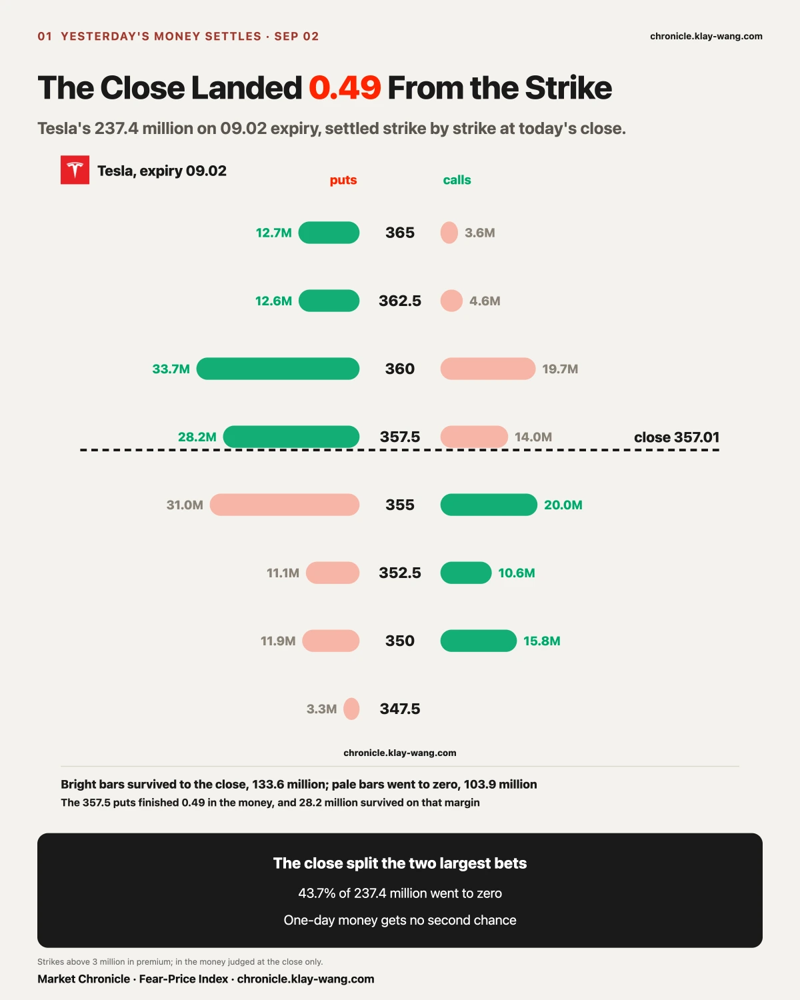
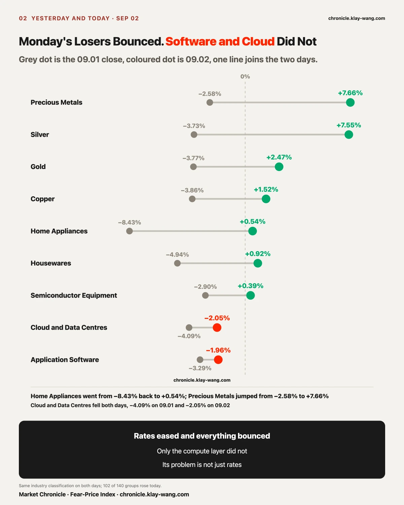
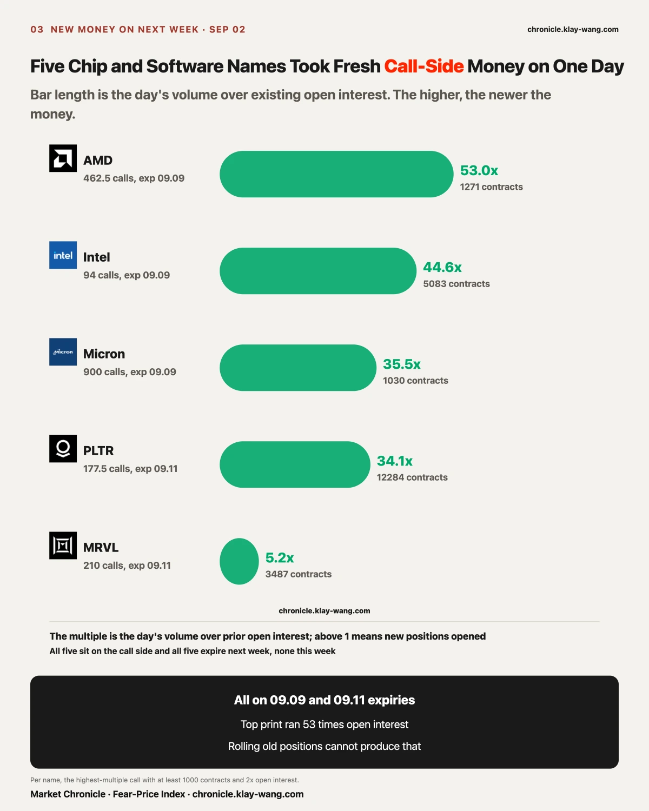
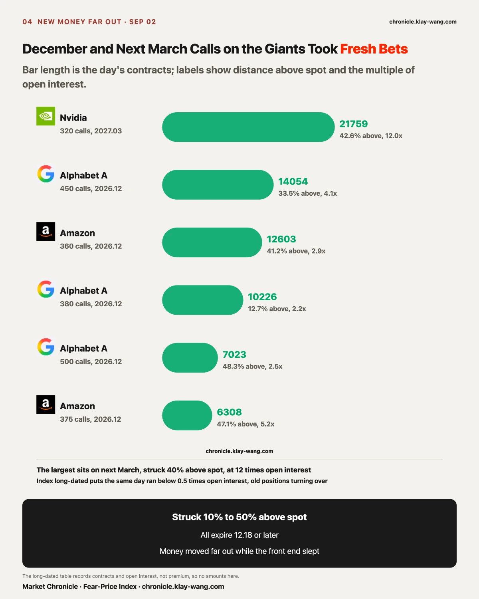
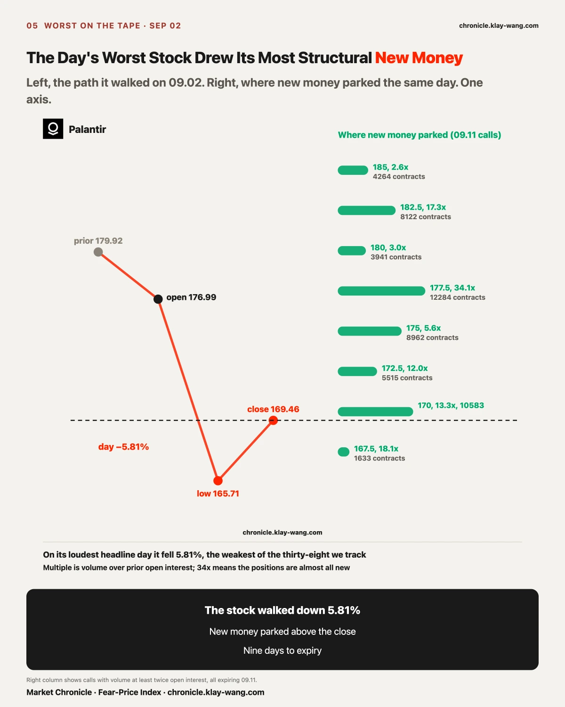
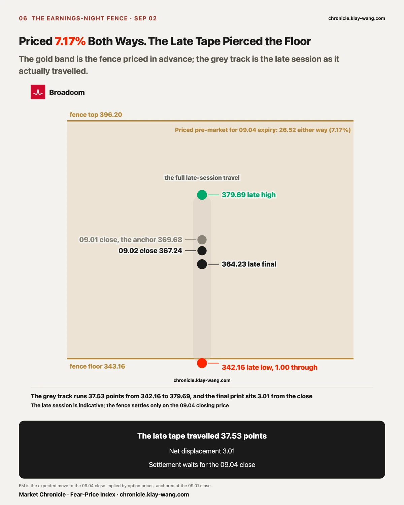
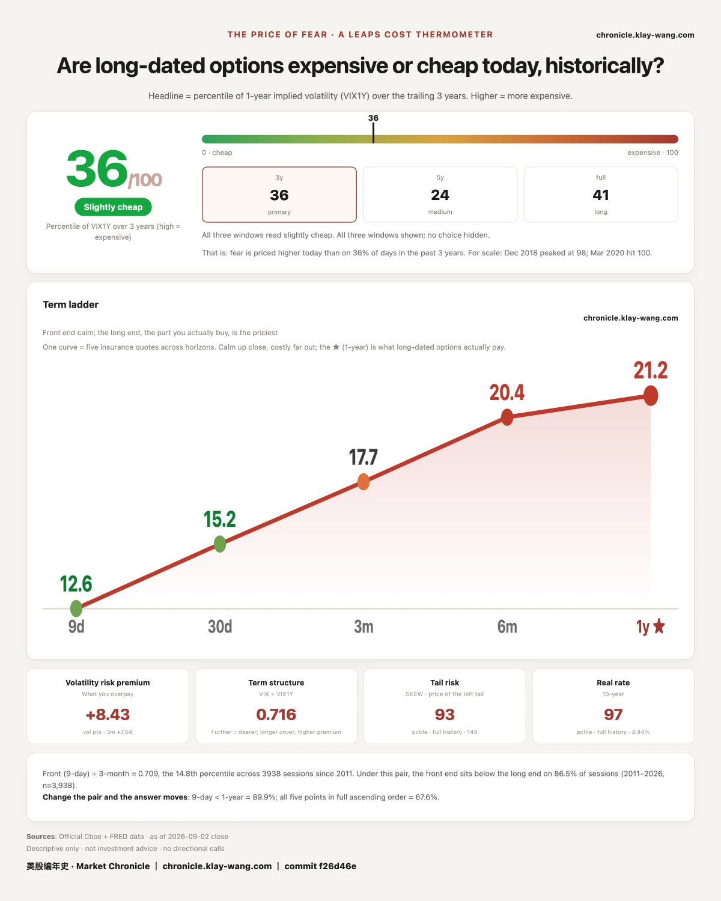

One. Tesla's 237.4 million expiring 09.02 settled strike by strike: the close of 357.01 sat between the two largest bets, 43.7% went to zero, and the 357.5 puts survived by 0.49.
Two. Everything rates beat down on 09.01 bounced on 09.02, with precious metals swinging from −2.58% to +7.66%. Only cloud and data centres stayed at the bottom for a second day.
Three. Broadcom beat on revenue, guided under 1% light, and spent the late session travelling 37.53 points inside a fence the market had priced at 7.17% either way. Net displacement: barely one point.

Start with the account written yesterday. Seven tenths of the day's short-dated premium sat on Tesla, and 237.4 million of it expired 09.02, with 146.6 million in puts against 90.87 million in calls. The criterion was fixed in advance: whichever side the 09.02 close lands on wins.
The close came in at 357.01, up 0.26%. The landing spot was a needle's point: the two heaviest strikes were 355 and 360, and the close stopped between them. The 360 puts, 33.7 million, survived whole and were the day's largest winner. The 355 puts, 30.95 million, went to zero whole and were the largest loser. Five dollars apart, opposite fates.
The finer cut sat at 357.5. Thirty-eight thousand puts, 28.2 million in premium, and a close 0.49 higher would have erased all of it. At 357.01, that 28.2 million lived on a margin of 0.49. A one-day contract settles only on the closing price. The session touched 349.92 and 360.62 along the way, and none of that counts.
The full ledger: of 237.4 million, 133.6 million finished in the money and 103.9 million went to zero, 43.7%. Yesterday's framing was that the put side was heavier. In the end the puts kept 87.1 of 146.6 million and the calls kept 46.4 of 90.9 million. Each side lost roughly half. The big bets were struck on round numbers, the close stopped between the round numbers, and no side swept the day. The hit rates side by side say more: the put side recovered 59% of its 146.6 million, the call side 51% of its 90.9 million, nearly a tie. Direction is worth only half the game in one-day contracts. The other half is strike selection, and the 5 dollars between 355 and 360 was the entire distance between winning and losing today.
The same name flipped its money today. Tesla's unusual premium came to 397.3 million, first on the tape again at 57% of the day, but the sides reversed: 290.8 million in calls against 106.5 million in puts. The weight also rolled out, from same-day expiry to 09.04, which carries 255.8 million. The pipeline's event calendar has Tesla's Cybercab event in Austin on 09.03, and 09.04 is the first Friday covering it. Yesterday's money bought 09.02 itself. Today's money bought the stretch after the reveal.
One more batch went in and settled the same day: 111.2 million in calls expiring 09.02, led by 161084 contracts at the 352.5 strike, 74.9 times the existing open interest, 47.4 million in premium. By the same criterion, roughly nine tenths of that 111.2 million finished in the money. In at the open, judged by the close, alive for a few hours.

The sector tape was Monday's mirror. Of 140 industry groups, Monday fell 100 and rose 39 with a median of −1.06%. Today rose 102 and fell 38 with a median of +0.70%. The hardest bounces were Monday's hardest hits: Precious Metals swung from −2.58% to +7.66%, Silver from −3.73% to +7.55%, Gold from −3.77% to +2.47%, and Home Appliances, Monday's worst group, went from −8.43% back to +0.54%. Across assets the direction matched: the gold ETF rose 1.51%, silver 1.98%, gold miners 3.12%, the dollar fund slipped 0.14%. Real rates eased a notch, assets that pay no yield got their blood back, and Monday's logic ran in reverse.
The exception is one layer. Cloud and Data Centres fell 4.09% Monday and 2.05% today, at the bottom of the tape both days, with Application Software at −1.96% and System Software at −1.34% for company. Monday its decline came with a ready explanation: rates punish long cash flows. Today rates eased, the explanation expired, and it fell anyway. An explanation that only covers one day of a two-day decline was never the reason.
Set it against the volume of the demand story and the two days get stranger. Nvidia told its investor meeting that without supply constraints the business could double. TSMC said nearly twenty fabs are under construction at once, with equipment demand nearly doubling in half a year. Dell booked new AI server orders at 3.7 times its quarterly AI revenue. While the doubling talk peaked, chips rose, Nvidia +3.21% and Micron +2.42%, and the cloud layer fell for a second day. The market is pricing the compute business in parts: chipmakers on one ledger, the middle layer that rents compute out on another, and the narrative's volume has only been poured into the first. The further a layer sits from end cash flow, the sooner it got sold.
The top of the table told a story of its own: Marine Port Operators rose 8.70%, first of 140 groups, as the tanker attacks off Hormuz entered a second day and freight and insurance repriced the risk.

The most shared reading of the past two days goes like this: Wall Street is deliberately dumping long bonds to force the long end higher, running a stress test on the central bank, egging it toward a hike. The material is ample. The ten year touched 4.78% yesterday, the highest since January 2025. Governor Barr said in public that if inflation is not cooling enough, the answer is a decisive hike. Treasury Secretary Bessent argued back that this is a supply shock and hikes are the wrong tool. Officials arguing, yields rising, every part in the script cast.
A stress test carries its own yardstick: someone has to be under stress. Run that yardstick over today's ledger and the money is calm in all four places. The Treasury ETF closed up 0.10% on a 0.37% range, quieter than the S&P ETF. Its options are blunter still: thirty-day insurance moved 0.04 on the day, and in the day's unusual prints call contracts ran nearly twice puts, so the heavier side of the option desk is positioned for bond prices to recover, the opposite of the exodus script. The price of insuring against rate moves is indeed rising, now a fifth straight session, from 69.44 on 08.26 to 79.71 on 09.02, up 10.27 in five days. Two details temper it: the position has only climbed from the 11.8th percentile of three years to the 29.4th, with costlier days on seven in ten across those three years, and the last three daily increments have shrunk in order, 4.35 then 2.56 then 1.83. The climb is decelerating, not accelerating. The starting point matters too: on 08.26 it sat at 69.44, near a three-year floor at the 11.8th percentile, and five days of climbing from a floor that low still leaves it in the bottom third of its own history. That is not what an event looks like on this ruler. And the day's only structural new money on bond direction was 4750 puts on the Treasury ETF, December expiry, struck 33% below the price, costing cents per contract. Lottery-ticket money.
Nobody under stress was found. The story needs a panic, and the ledger shows no one paying for one. The difference between order and panic was never the direction of prices but the haggling: in a panic, insurance is grabbed and quotes jump whole rungs; in today's market every quote still has someone behind it willing to work the price one notch at a time.
The data side fails the script too. At 8:15 the August ADP print showed 38 thousand private jobs added, below the 48 thousand expected, the smallest gain since January, a day after both ISM manufacturing gauges softened. Growth data worsened for a second day. In the script, supply panic keeps the long end climbing. What happened was the thirty year yield falling back from its intraday high. There is no panic in three days of bond pricing. There is one hike, already assigned a probability. The market paid for one and not for a series. The August issue's call was measured a second time today and it stands.
The Barr and Bessent fight is worth reading as pricing too. The two are arguing over two sides of the same balance sheet: one fears inflation writing itself into wages, the other fears interest eating the budget. The verdict only comes on decision day, and the swaps market has already staked 65% on one side, a bet less on the inflation path than on how much credibility this central bank intends to buy back with one hike.
The calendar now lines up three tests in a row. Nonfarm payrolls Friday 09.04, inflation data 09.11, the meeting 09.15 to 09.16 with the decision Wednesday afternoon 09.16. At a 65% priced probability, this week's employment data has been demoted from referee to footnote: the market reads this September hike as a credibility project, where data moves the size and cannot move the script. What can move the script is the 09.11 inflation print, and whether the word after the 09.16 decision is one or a series. The prior two issues dated this meeting 09.16 to 09.17; checked against the calendar source it is 09.15 to 09.16. Corrected here with the date. Old copies stand.

Most of any day's unusual prints are old positions turning over, hedges rolling, and routine queuing before events. Separating new money takes one ruler: the day's volume over existing open interest. A multiple in the tens means almost nobody held the contract yesterday and the position opened today. A multiple below 1 is mostly turnover.
Run that ruler over today's tape and two rows stand out, both on the call side.
The near row expires next week. AMD's 462.5 calls traded 53 times open interest, Intel's 94 calls 44.6 times, Micron's 900 calls 35.5 times, Palantir's 177.5 calls 34.1 times, Marvell's 210 calls 5.2 times. Five names, five structural prints, all on 09.09 and 09.11 expiries, none this week. Micron ran a whole ladder, 900 to 950, over 14 million in premium across three strikes, a day after Nvidia named advanced wafers and high-bandwidth memory as the binding constraints at its investor meeting. The ladder got its test question overnight: a research report this morning said Nvidia has halved the high-bandwidth memory spec on its next product, cutting memory from 40% to 28% of bill-of-materials cost, with the savings moved to networking. The ladder only lives to 09.09 and the report speaks to next year's volumes, a year apart in time scale, and tomorrow's tape will say which one the market believes.
The far row expires from December out. Nvidia's March 2027 calls struck at 320, 42.6% above the close, traded 21759 contracts at 12 times open interest. Alphabet's December 450 calls took 14054 contracts at 4.1 times, with the 380 and 500 strikes each above 2 times. Amazon's December 360 calls, 41.2% above spot, took 12603 at 2.9 times. Microsoft's 690 calls took 5272 at 2.8 times. Microsoft also moved a structural piece today, announcing its first reporting reorganisation in over a decade, with Azure disclosed on its own from next quarter after booking 101.94 billion last fiscal year, nearly a third of company revenue. On the day short-dated insurance repriced lower across the board, someone paid fresh money for these names' upside strikes in December and next March.
The two names shouting about doubling also had their insurance marked. From Nvidia's investor meeting, its thirty-day insurance rose from 31.19 to 32.73, up 1.54, while the one-year moved from 38.86 to 39.34, up 0.48. The doubling talk is about fiscal 2028, and the market would only add half a point to the price of one year of cover. TSMC was blunter: on the day it described twenty fabs under construction, its thirty-day insurance fell 0.97 and its one-year fell 0.75, both cheaper, and its premium did not crack the day's top ten. The volume of a doubling story cannot move the whole insurance curve. It can only move a few far, narrow strikes, and next March's 320 is the exit that money chose. The number 320 had a second source the same day: one large bank's twelve-month number on Nvidia sits at exactly 320, 43% above the 09.02 close. The strike those 21759 contracts picked matches it to the dollar. Coincidence or cross-reference, the trade record does not say, and the number sitting there is enough.
The same day's filings hold a record pointing the other way. An Nvidia director sold 1.8485 million shares across seven trades between 08.31 and 09.02 at a weighted average near 222.26, about 411 million dollars, 35.5% of his stake. The options ledger shows new money paid for strikes 40% above the price next March. The filings show a seller cashing a third of his holding near the current price. Neither is a forecast. They are two people's separate accounts, laid side by side on one day.
The same ruler filters the noise out. The Nasdaq ETF's December 700 puts traded 19127 contracts, at 0.4 times open interest: old positions turning over. Nvidia's February 2027 puts struck at 110 ran 13.1 times, but the strike sits half below the price: the standard shape of tail protection. Neither makes the list above. Reading them and the new money as one lump of unusual activity reads nothing at all.

The AI applications narrative peaked today. Palantir won the prime contract for eight TITAN ground stations, the framing ran on turning tokens into cash flow, and and the highest twelve-month number quoted in the coverage reached 255.
Prices returned a different verdict. Palantir fell 5.81%, the weakest of the thirty-eight names we track. The way it fell matters: the gap down was only 1.63%, and the remaining 4.25% was walked out through the session. Overnight sentiment owed the small half. Daytime selling owed the large half. On the loudest day of coverage, somebody was selling all session. Both are true at once.
The options tape added a third fact. Its 09.11 calls took a field of structural new positions: 12284 contracts at the 177.5 strike against 360 held yesterday, 34 times; 10583 at 170, 13.3 times; 17.3 times at 182.5; 18.1 times at 167.5. Call premium ran 15.3 million against 9.9 million in puts. On the day the stock walked down 5.81%, someone paid new money for strikes above its close, nine days out. The trade record does not show which way that money leans. It shows position and window: above the close, nine days, answer due at the 09.11 close. On this day its options ledger was more honest than its headlines.

Broadcom reported after the close. The quarter itself left little to pick at: revenue of 29.59 billion, up 86%, above the 29.36 billion expected; earnings of 3.32 per share against 3.24; semiconductor revenue of 16.7 billion, ahead of estimates. The gap sat in the guide: 34.8 billion for the fourth quarter, two to three hundred million below the street, under 1%, with published estimates running 35.0 to 35.1 billion. On the call, management laid out the account: AI revenue guided up from 56 to 58 billion this fiscal year, doubling to roughly 115 billion in fiscal 2027 and doubling again to roughly 230 billion in 2028, on a locked-in supply basis, and a fourth-quarter gross margin guide of 73%, five points below a year ago. Scale first, margin behind it.
The tape had priced this evening in the morning. Pre-market, the expected move to the 09.04 close stood at 26.52 dollars either way, 7.17%, a band from 343.16 to 396.20. The price was not cheap: its thirty-day insurance sat at 50.4, the 67th percentile of its own year, above its one-year at 46.76, the only name of our twenty-one with the near month above the far, the event premium stacked at the front.
The late session ran the answer against that fence. First reaction down, a low of 342.16, exactly one point through the floor. Then the turn, a high of 379.69, leaving 16.51 to the ceiling. The extended session closed at 364.23, down 0.82% from the regular close. Low to high, the tape travelled 37.53 points. Net displacement at the final print, 3.01. The first reaction cut 6.8%, and what it graded was not the sub-1% miss against the average: the expectations in circulation ran higher, with some houses above 36 billion for the fourth quarter, and the late tape priced that private ledger first before handing most of it back within two hours. The fence settles only on the 09.04 close; tonight's readings are the late session's interim numbers, both rails touched, price back inside, no losers yet.
Tomorrow morning brings a ready test: whether the event premium stacked at the front end is still there. With the report out, the event moved from unknown to known. Thirty-day insurance falling back below the one-year says the premium cleared. A continued inversion says the market judges this report to have settled nothing.
No trade suggestions below. Only prices converted into things you can judge for yourself.
Holding broad ETFs: 102 of 140 groups rose and the median was +0.70%, unwinding most of Monday. Across the two days the index barely moved. What moved was the seating inside it.
Holding Tesla: the Cybercab event is 09.03, and today's heaviest new money sits on 09.04 expiry, 163.4 million in calls against 92.3 million in puts. That money bought the two sessions after the reveal, judged at the 09.04 close.
Holding Broadcom: the market priced the earnings night at 7.17% either way and the late tape stayed inside the fence. Its thirty-day insurance sits at the 67th percentile of its own year, and that event premium usually collapses once the report lands. Protection will likely cost less tomorrow than today.
Holding semiconductors or storage: five prints of new money went into next week's call side today at multiples in the tens of open interest, with Micron running a ladder from 900 to 950. The window closes at the 09.09 and 09.11 sessions. Those closes are the audit dates.
Holding Palantir: the stock walked down 5.81% while calls nine days out took money at 34 times open interest. The two ledgers point opposite ways, and tomorrow morning settles half the question: positions that stay were serious money; positions that vanish were a day trip.
Holding gold, silver or crypto: they fell together Monday. Gold and silver bounced today; of the crypto three, only Mara closed green. Same drawer, uneven spring.
The implications are laid out. What to do with them is each person's own account.
One. Volume over open interest is the first ruler for separating new money from turnover. Tens of times means the position opened today. Below one means old positions changing hands. Do not read rolling as attacking.
Two. The earnings-night fence is priced before the open. The evening's violence only grades that price. Read what the market charged first, then what the tape actually travelled.
Three. A one-day contract settles only on the close. How many times the price crosses the strike during the session does not count. Missing by 0.49 and missing by 49 are two spellings of the same ending.
Tesla's 255.8 million on 09.04 expiry covers tomorrow's Cybercab event. Today's reading: 163.4 million in calls against 92.3 million in puts, close 357.01. Criterion: whichever side the 09.04 close lands on, that half of each contested strike wins. The closing round of the short-dated table and the closing price only.
Whether Palantir's 09.11 call field stays. Today's reading: 12284 traded at 177.5 against 360 held, 10583 at 170 against 796. Criterion: overnight open interest against today's volume approaching 1 means the positions stayed; back to prior levels means a day trip. Must be read the morning of 09.03; the number is unrecoverable after that.
Broadcom, two accounts kept separately. The fence: a 09.04 close inside 343.16 to 396.20 holds it, outside breaks it, closing price only. The event premium: thirty-day insurance at 50.4 against one-year at 46.76 today; thirty-day back below one-year pre-market 09.03 means the premium cleared, a continued inversion means the report settled nothing. The pre-market round of the structure table only.
The August issue's bond call stays on the book. Today's reading: 79.71, the 29.4th percentile, a fifth straight rise with the daily increment narrowing for two sessions. The void conditions stand: this ruler clearing the 90th percentile of three years, or the one-year reading clearing 55 within three sessions of a September hike landing. Next test, the 09.16 decision. The prior two issues dated the meeting 09.16 to 09.17; against the calendar source the decision day is 09.16, corrected here with the date, old copies stand.
The thirty-day versus one-year split and Apple's succession pricing stay on their September windows, untriggered. Criteria and sources as filed on 09.01.

One more ruler prices a year of insurance on equities, and today it made the largest single move on the tape. The Fear-Price Index reads 35.8, from 46.8 yesterday, 11 percentiles surrendered in one session. The price behind it barely moved: one-year volatility slipped from 21.93 to 21.24, a move of 0.69. Yesterday's issue described this ruler's temperament, sitting in the densest part of the distribution where the rank jumps far more than the price. Yesterday was the upward version, 0.06 buying 1.3 percentiles. Today was the downward version, 0.69 selling 11. One mechanism, two directions on two days.
All five tenors repriced lower: nine day from 14.33 to 12.57, thirty day from 16.34 to 15.20, three month from 18.33 to 17.73, six month from 20.56 to 20.36, one year from 21.93 to 21.24. The nearest bucket fell hardest, 1.76 in a day, two and a half times the one-year decline. What got marked up last week was the front, and what gave the price back first this week was the front. Event premium enters and exits through the same door.
Set the two rulers side by side and today they parted ways. The bond ruler rose a fifth straight session, 79.71 at the 29.4th percentile. The equity ruler repriced lower across the curve, back to the 35.8th. Same day, same macro tape, two insurance markets doing opposite things. The parting is itself the reading: bonds are re-marking the books for a hike, while equities have filed the same event under schedule. Fewer people paying for uncertainty, more people waiting for a date.
Fear-Price Index by Market Chronicle · 2026-09-02 · 35.8/100: one-year volatility VIX1Y at 21.24, in the 35.8th percentile over three years, where high means expensive. Daily ledger and definitions → chronicle.klay-wang.com · Credit: Fear-Price Index · Market Chronicle
Options flow and single names, updated daily → chronicle.klay-wang.com/options
Gauge readings and both ledgers → chronicle.klay-wang.com